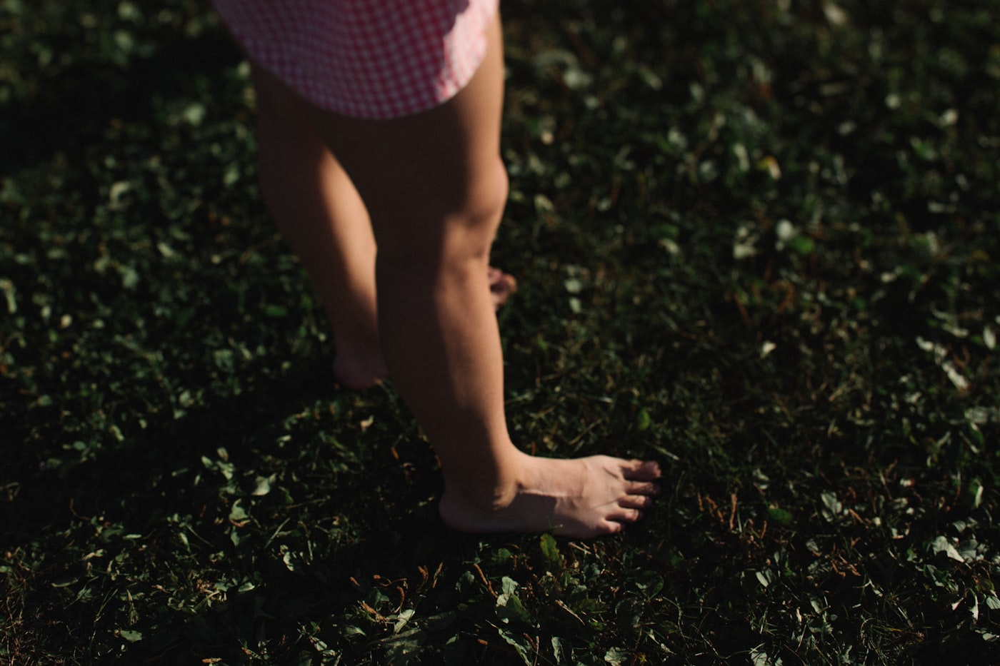

Early digital foot screening
Early foot screening for every child.
SoleShift Kids uses 3D scanning and automated analysis to capture a child's foot in seconds, generate a clear report for parents, and — with their consent — connect the family to the right specialist. A screening system, not a medical diagnosis.
Screening only · Parental consent required · Anonymized by default
The problem
Cheap to catch early. Expensive to catch late.
- Screening is rare and mostly manual.
- Results are subjective and rarely recorded over time.
- Families rarely get referred at the right time.

Scope, stated plainly
What SoleShift Kids is — and is not.
What it is
- Digital screening + 3D foot geometry.
- An automatic, readable report.
- Tracks change over time.
- Routes families to partners, with consent.
What it is not
- Not a medical diagnostic device.
- Doesn't name conditions or treat.
- Doesn't manufacture insoles.
- No data stored without consent.
Screening ≠ Diagnosis
How it works
From footplate to specialist in five steps.
3D scan
The child stands on the plate for a few seconds.
Automated analysis
Length, width, arch height, and shape are extracted.
Clear report
Plain-language measurements, no diagnosis.
Parents receive the results
The family sees it first. Always.
Optional partner referral
With separate consent, a partner clinic takes it from there.
The hardware
Simple hardware. Repeatable results.
Built from accessible components so it can be rebuilt and deployed in a school or a rural clinic, not only in a lab.
Sample report
A report a parent can actually read.
- Foot length21.4 cm
- Foot width8.2 cm
- Arch height1.9 cm
- Arch index0.24
- Asymmetry3.1 %
- Shoe fitSize 33
Not a diagnosis — a pediatric orthopedist can confirm whether anything is needed.
A rule-based measurement pipeline — described honestly, not sold as "diagnostic AI".
Privacy and consent
Children's data, handled carefully.
- Consent firstNo scan without written parental consent.
- Anonymized by defaultStored under an ID, not a name.
- Second consent to shareA separate permission to forward a report.
- Parents can withdrawConsent revoked, data deleted, any time.
Who this is for
Three audiences, one system.
For schools
A screening day with minimal disruption. We bring the equipment, the consent forms, and the reports.
Host a screening dayFor clinics and manufacturers
Receive structured, consented digital foot data instead of hand-measured guesses.
Become a partnerFor parents
Understand your child's foot growth, and know when it's worth seeing a specialist.
See a sample reportLearn more
The project, in full.
A closer look at the concept, the plan, and the people behind SoleShift Kids.
SoleShift Kids is an engineering and public-health project that uses 3D scanning, automated analysis, and data to assess the shape of a child's foot. It helps schools and medical institutions get digital foot data quickly, and flags cases where a specialist visit is worth considering.
It is not a medical diagnostic system, and it does not manufacture insoles. With parental consent, results can be passed to partner clinics or manufacturers, who decide independently on next steps.
We track what actually happened, not projections:
- Children scanned
- Digital reports generated
- Children referred for a specialist consultation
- Schools reached
- Rural medical centers involved
- Specialists trained
- Screenings completed
- Average processing time per scan
Numbers appear on this site only once they're real.
A report can be forwarded to these organizations, always with a separate parental consent — they decide independently what, if anything, to offer the family.
- 01 · Prototype — hardware and analysis pipeline, in active development.
- 02 · School pilot — one full screening day at one school, start to finish.
- 03 · Clinical partners — consented referral to orthopedic clinics and manufacturers.
- 04 · National rollout — more schools, more regions, more rural medical centers.
Each stage only starts once the previous one is real, not planned.
- Founder & Project Lead — overall direction, pilot, and partnerships.
- Hardware Lead — scanner design and build.
- Software & AI Lead — analysis pipeline and reporting.
- Web & Design Lead — site, reports, and documentation.
Names will be added as the team is finalized.
- Screening, not diagnosis — the report suggests a specialist visit, it never names a condition.
- Parental consent, always — no scan without it, no sharing without a second, separate consent.
- Data protected — anonymized by default, no child's face published, deletable on request.
- Real numbers only — every figure on this site is something that actually happened.
- Honest about the AI — if it's a rule-based measurement pipeline, that's what we call it.
- Partners treat, we don't — SoleShift Kids builds the referral infrastructure, not the treatment.
FAQ
Questions, answered plainly.
No. It's a screening and referral system — it doesn't diagnose, treat, or replace a specialist.
The parent, first and always. A partner only sees a report with a separate, explicit consent.
Yes, at any time. Consent can be withdrawn and data deleted on request.
No. Manufacturing and treatment are handled entirely by our partner clinics and manufacturers.
SoleShift Kids is an early screening and referral system. It does not provide medical diagnosis or treatment, and does not replace consultation with a qualified specialist.